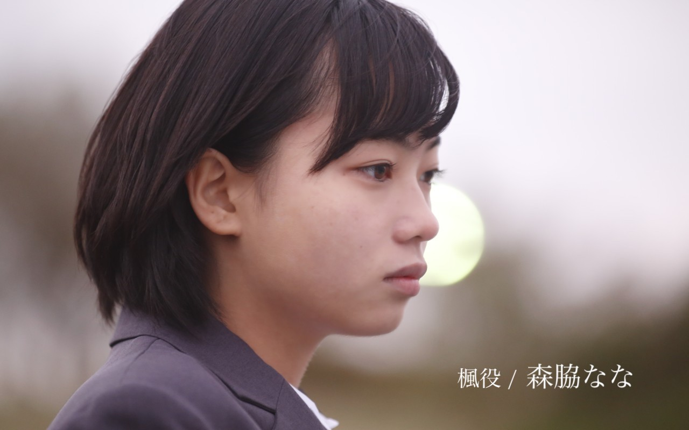
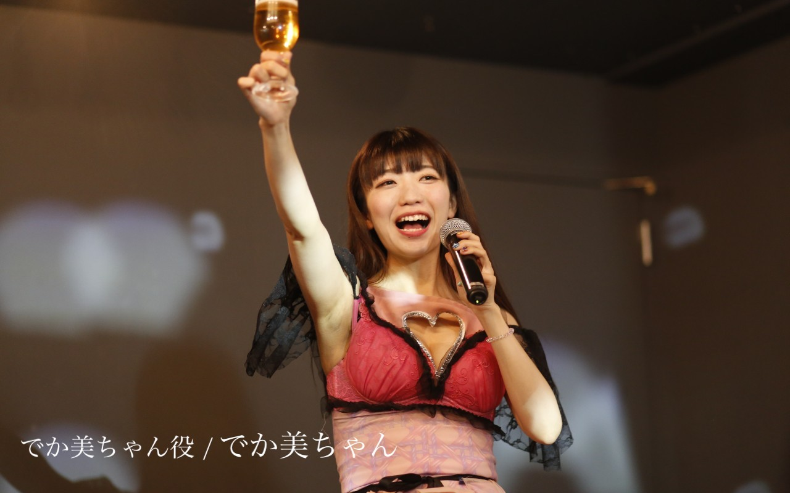

1988年、奈良県生まれ。テレビ、 映画、CMと活躍。企画、共同監督した短編映画「COCKROACH」がSSFFで優秀賞を受賞。その他、イギリスでのNISFFにてベストコメディー賞を受賞、国内外の多くの映画祭に入選。今年、台湾と合作で短編映画『多日想果』(タピオカ)を監督。国内外の映画祭に出品中。

1992年4月16日生まれ。2014年ヌードモデルとしてデビュー。2017年初写真集『きっとぜんぶ大丈夫になる』を発売し、東京・大阪・台湾にて写真展が開催される。2020年に写真集『羊水にみる光』、『しあわせのにおいがする』が発売された。 現在はヌードのみならず、ファッションやビューティー、MV出演やジャケット写真のモデルなど様々なジャンルで起用される。2016年以降女優としても活動しており、映画『三つの朝』(第4回富士・湖畔の映画祭2018短編主演俳優賞)『アンチポルノ』『シスターフッド』『ふたり』『海辺の途中』などに出演している。

1994年5月9日生まれ25歳。2011年鉄道アイドルユニットとしてデビュー。2017年よりドラマや映画等で活動中。
TV、映画、CMを中心に活躍。 主な出演作：ポカリスエットCM「アオくなれ篇」メインキャスト / 渡邉世紀監督映画「それぞれのヒーローたち」ヒロイン竜崎由美役 / テレ朝 金曜☆ロンドンハーツ「みやぞんのドッキリ田舎道」/ 松本卓也監督映画「Edge of Love」新婦友人役 / イグロヒデアキ監督映画「逃げろ、増本！」増本ガールズ役 / 三木康一郎監督映画「リベンジgirl」ミスキャンパス候補役 / CX「FNS番組対抗 オールスター春の祭典、目利き王決定戦」新川優愛さん役 / 岩崎登監督映画「神の発明。悪魔の発明。」ショウコ役 / 岩崎友彦監督映画「超人スポーツ」涼子役
1991年5月3日生まれ。三重県出身 O型 おうし座 桃色。一度聞いたら二度と忘れられない名前と、「言うほどでかくないがそこそこでかい」おっぱいを武器に、場所を選ばず大活躍。 日本テレビ「有吉反省会」レギュラー出演の他、自身の楽曲の作詞作曲やライブ活動、楽曲提供、グラビア、コラム執筆などジャンルやメディアにとらわれず活動中。大のハロプロファンとしても知られる。